Digital cameras often have quite some noise in their pictures. Some are worse than others, but it's there. Here I'll show you a way to get rid of that noise using the selective Gaussian blur filter.
The basic idea behind selective Gaussian blur is that areas in the photo with contrast below a certain threshold gets blurred. You could think of it like the opposite of unsharpen mask (that sharpens everything with contrast above a certain threshold.
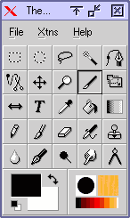 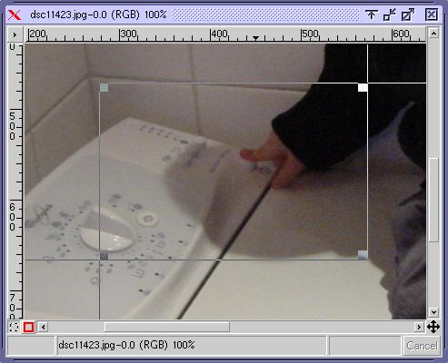
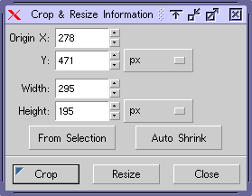
Since the selective Gaussian blur filter doesn't have a preview and is quite heavy to compute (proportional with blur radius), it's easier to only work on a cropped version of you picture. Select the crop tool from the tool box, draw a selection and click "crop".
For best results, this should a part where there's some noise you want to remove and some detail you want to preserve.
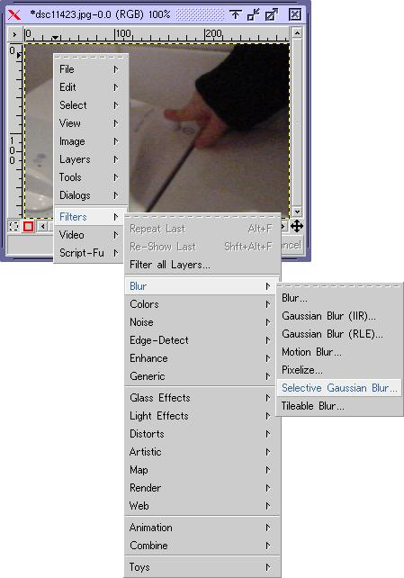
The next thing is to experiment with different combinations of the settings ("blur radius" and "maximum delta") in the selective Gaussian blur filter.
Normally I find that both settings should be between 5 and 10, where low numbers has less effect and higher numbers more, but this is very depending on the camera. In short, maximum delta should be just high enough for the filter to kick in on the noise and blur radius should be just high enough to remove it (actually blend it with neighboring areas).
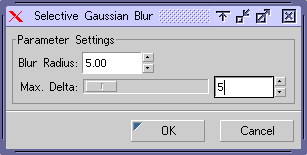 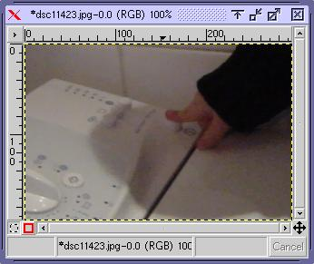
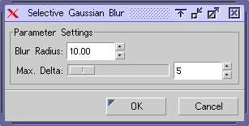
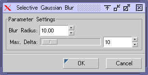
For a more in depth explanation of what the settings do see http://www.ftgimp.com/help/C/filters/sel_gauss.html.
After playing with the settings a bit I liked the clean look of a blur radius of 10 and maximum delta of 10. Then I checked what those settings looked like on another crop (which is always a good idea to do), I decided that it was on the very edge, and maybe even too much. There was too much loss of detail in the hair.
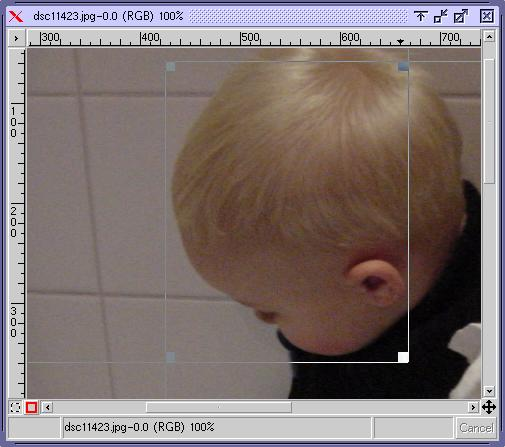 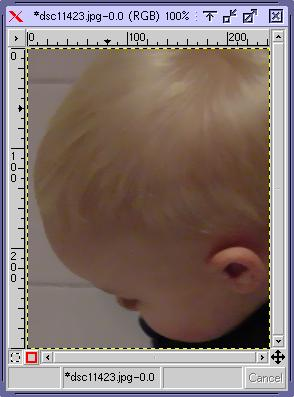
An option would have been to back off a bit and use settings around blur radius 7 and maximum delta 6, but then again the only offending area was the hair. I finally decided to go with settings of 8/7.
You'll often find yourself in these arguments with yourself over when it's too much and when it's too little. All I can say is that you develop a feel for it, and I'm still not finished developing that feel. In any case, it's good to know that the first things that start to look funny are often faces and hair.
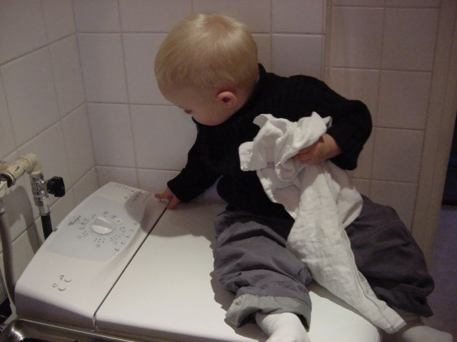
After 8 minutes my AMD-K6 300 running Linux finished the process, and I got the following (note they are resized to 640x480 from 1280x960, you can get the larger files at the bottom of this page):
First image: Before.
Last image: After (blur radius:8, maximum delta:7).
Before, 1280x960, JPEG (120 Kb)
After, 1280x960, JPEG (104 Kb)
{kind=link}
{kind=link}
The original tutorial can be found here.